Historia
Haciendo justicia a la naturaleza que representa su aspecto, la travesura, Zoe no llegó al poder por medios tradicionales. No logró una espectacular victoria contra todo pronóstico, ni se sacrificó por un ideal noble, ni superó el juicio empírico de ascender el Monte Targon: Zoe era una niña normal, aparentemente elegida al azar.
Sus maestros lunari decían que Zoe era una niña tan imaginativa como obstinada, holgazana, distraída y traviesa. Un día, al abandonar sus clases de magia sagrada para hacer algo "menos aburrido", el Aspecto del Crepúsculo de Targon la vio.
Observó cómo la joven se burlaba de los gritos enfurecidos de los sacerdotes lunari que la perseguían. Por fin, tras una hora de persecución, sus coléricos maestros la acorralaron. Antes de que pudieran atrapar a Zoe, el Aspecto invocó seis objetos frente a la niña: una bolsa de monedas doradas, una espada, un libro de estudio completo, una alfombra de la devoción, una cuerda de seda y una pelota de juguete. Cinco de estos objetos la podrían haber librado de la situación. Zoe eligió el sexto.
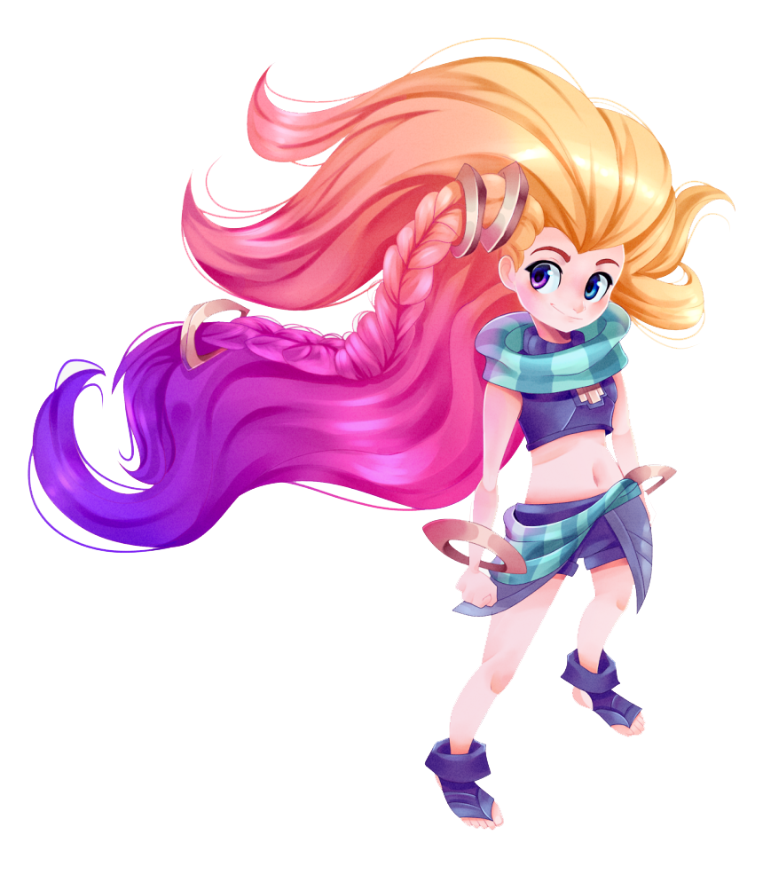Ajena a la posibilidad de escapar, eligió la pelota de juguete y empezó a darle patadas contra la pared de una casa contigua y a cantar alegremente mientras la pelota rebotaba entre los adustos sacerdotes.
Encantado por la exuberancia despreocupada de Zoe, el Aspecto abrió un portal resplandeciente hacia la cima del Monte Targon, ofreciéndole a la niña la oportunidad de ver el universo. Zoe se dejó caer de espaldas en el portal y se fusionó al instante con el Aspecto. Mientras desaparecía, aprovechó para sacarles la lengua a sus estupefactos maestros.
Tras esta inusitada transcendencia, Zoe viajó a los límites de las dimensiones bajo el control de Targon y jugó en realidades más allá de la comprensión humana.
Un milenio después, Zoe ha vuelto a casa, aunque apenas ha envejecido un año. Aunque desde su perspectiva Runaterra no ha cambiado demasiado, llega con la curiosidad de una adolescente por los humanos y sus compañeros Aspectos.
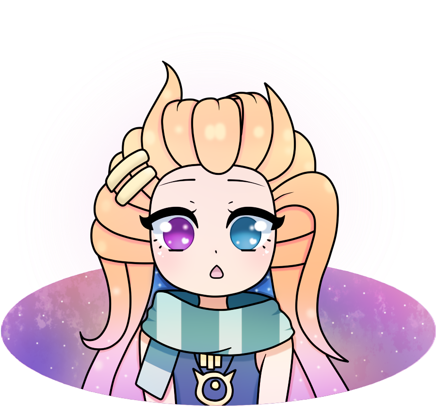De entre sus nuevas relaciones, quizás la más curiosa sea la que tiene con Aurelion Sol. La arrogancia, las mentiras y el hastío del dragón cósmico molestan a Zoe. A cambio, ella molesta sin tregua a la criatura gigante, aunque, cuando es necesario, también protege a su "perrito del espacio" y sus estrellas de la ira de Pantheon. Nadie sabe si lo hace por simple capricho, por egoísmo o por su trabajo como perturbadora, porque, con Zoe, nunca se sabe cuál es su verdadero objetivo... aparte de divertirse.
Nada más pensar en la pastelería, Zoe se lanzó al aire y se dejó llevar por la gravedad. Mientras caía, imaginó un portal con la mente. Al instante, bajo sus pies se abrió un portal que conectaba con el otro lugar, y cayó dentro. Toda su masa chocó e implosionó en ese recorrido.
Hacía un poco de cosquillas.
Por desgracia, Zoe no apareció donde quería. En su lugar, brotó de un segundo portal a una docena de zancadas de distancia, impulsada por el aire por la inercia de su caída anterior. Después, tras un breve momento de equilibrio, algo tiró de ella hacia el segundo portal. Una vez más, el tiempo y el espacio se torcieron a su alrededor (en una especie de "zumbido", como ella lo describiría) antes de acabar desplomándose en el punto inicial. A continuación, ambos portales se cerraron en el espacio y desaparecieron.
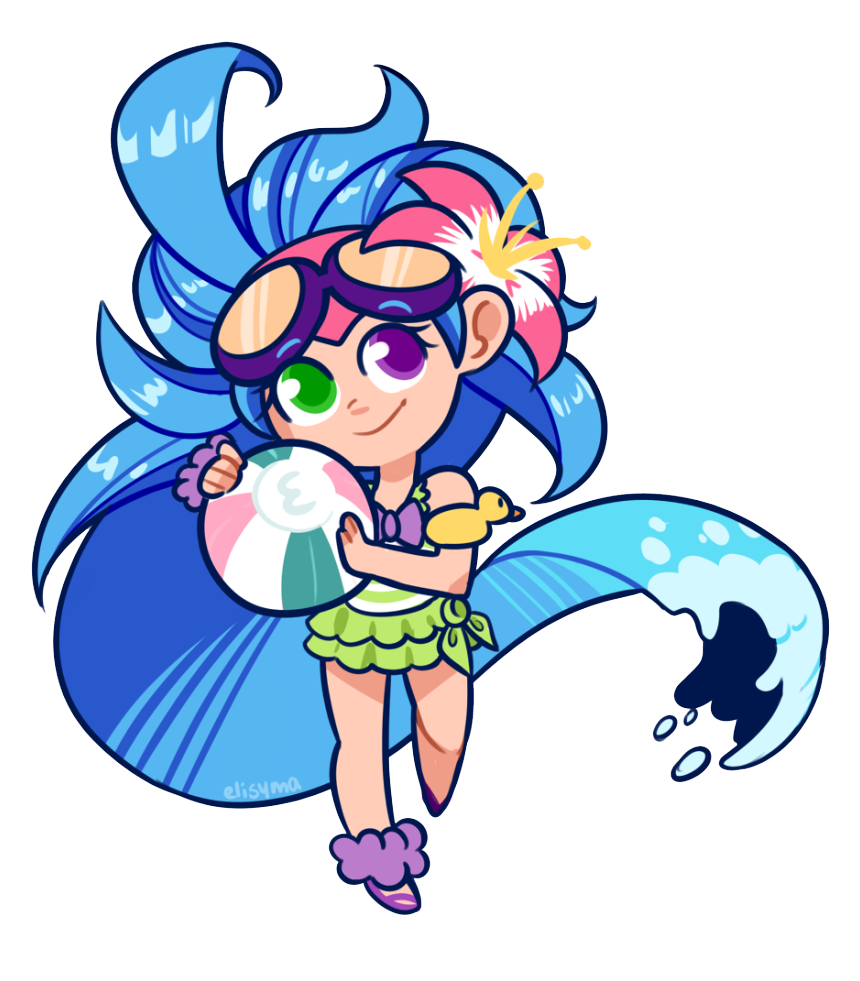Una magia poderosa estaba distorsionando la capacidad de viajar de Zoe. Probablemente estaba relacionada con un cambio que ella tenía que anunciar y, obviamente, todavía no lo había logrado. Se trataba de un problema, pero no uno desconocido. No estaba segura de cuál era el mensaje, para quién era o qué significaba, pero, según su experiencia, esos detalles rara vez importaban. Las matemáticas sagradas querían avanzar y los mensajes solían encajar poco después de que ella llegase. A Zoe le parecía que esa era una de las mejores ventajas de ser un Aspecto.
Por supuesto, ahora estaba la cuestión de qué hacer mientras esperaba. Zoe miró a su alrededor y vio a una pequeña y peluda criatura con una cola enorme junto a un árbol cercano. Parecía un pequeño yordle, aunque Zoe se percató de que la conexión de la criatura con el mundo espiritual era minúscula en comparación.
La vida del pequeño animal pasó como un rayo por la mente de Zoe: solo viviría durante una docena de rotaciones antes de devolver su espíritu. Para ella, la brevedad de su vida lo hacía aún más adorable. Zoe pegó un salto y corrió hacia la criatura.
—¡Qué monada!
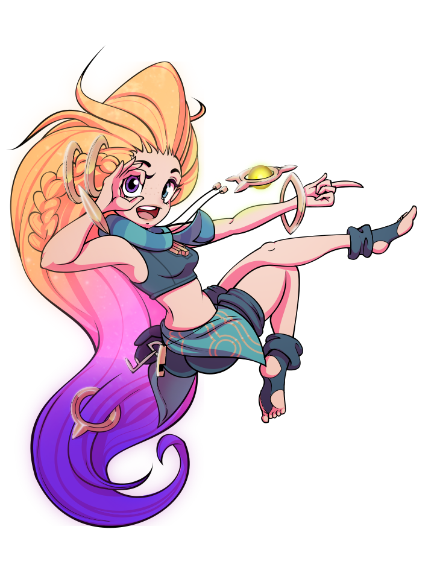El pequeño animal trepó por el árbol alejándose de ella.
—Eh, ¡vuelve! —espetó ella, enfurruñada.
Sin frenar su persecución, Zoe creó una burbuja temporal y la giró solo media rotación de planeta antes de lanzarla contra el árbol. La anomalía rebotó y explotó contra el tronco del árbol.
Durante un segundo, el pasado del adorable animal se fusionó con el presente. La noche cubrió el cielo de la zona y las mariposas crepusculares revolotearon a su alrededor. La pequeña criatura cayó en el sueño cansado y reparador de la noche anterior cuando el estado espiritual y mental de su pasado abrumó su conciencia actual.
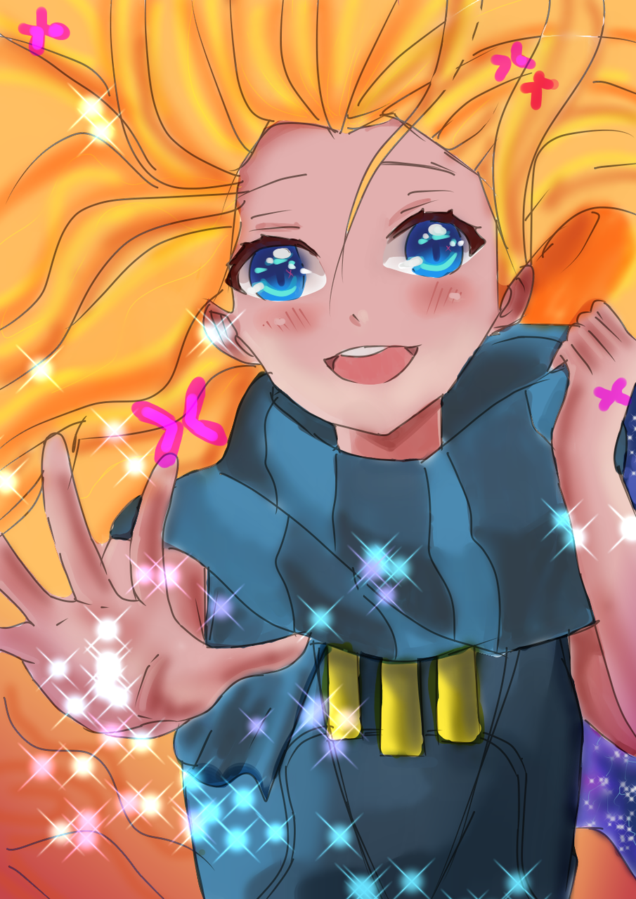Zoe ignoró la gravedad por un momento, flotó entre las ramas y se detuvo junto al diminuto animal. Su mano se contuvo dubitativa antes de acariciar su suave pelaje. Sabía que, en cuanto tocase a la criatura, su hechizo se rompería.
—Zoe es tu amiga —susurró. Pero cuando acarició la cabeza del minúsculo animal, se despertó sobresaltado y huyó de ella con pánico.
Decepcionada, Zoe flotó un poco más alto antes de ponerse boca abajo. Pensó en hacerle una visita a Aurelion Sol después de aquello. Al dragón tampoco le gustaba que lo acariciasen, pero a él era más fácil atraparlo sin hacerle daño, pensó ella. La idea se esfumó de su cabeza en cuanto Zoe alcanzó a ver un pueblo por encima de las colinas en el horizonte gracias a su nueva altitud.
Hizo aparecer un portal hacia el pueblo y se sumergió en él. Sin embargo, de nuevo, solo fue capaz de crear uno que la llevó a unos metros de distancia. Y lo que es peor: el portal se derrumbó en sí mismo, como anteriormente, y la atrajo hacia su punto inicial.
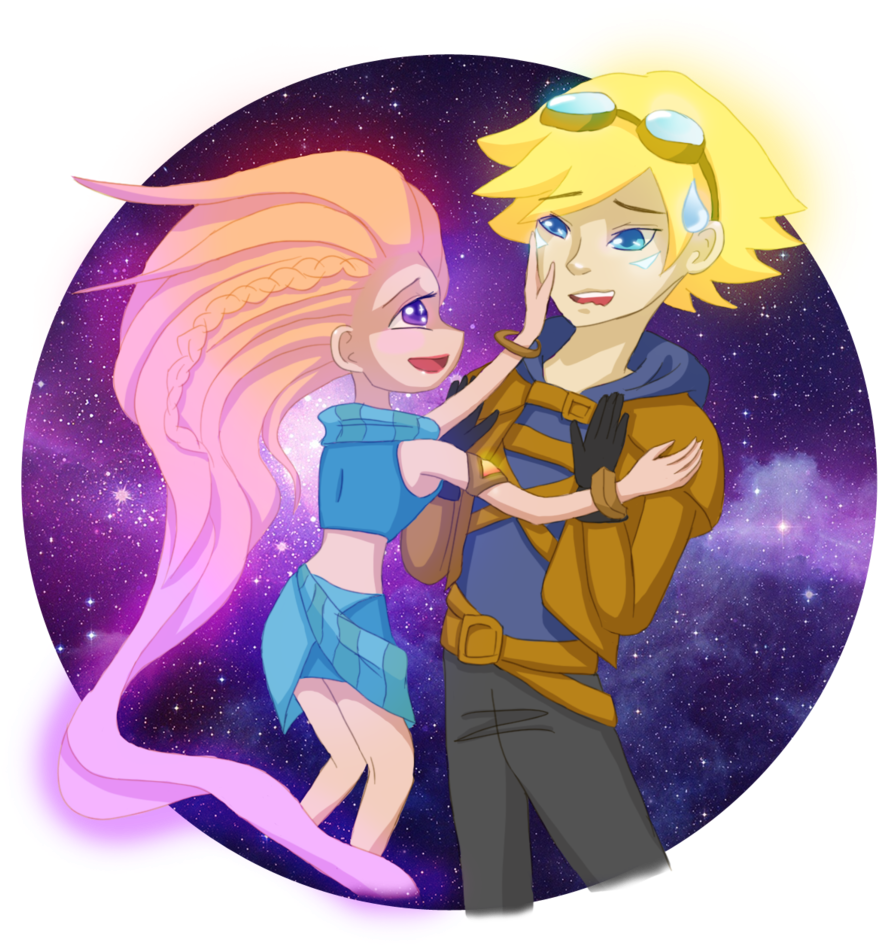No obstante, el vivo césped estival tenía un aspecto muy atractivo, así que, sin una opción mejor, caminó a través del bosque hacia el pueblo.
Llegó a las afueras de la ciudad amurallada cuando el sol comenzó a ponerse. Al escuchar risas, se deshizo de la gravedad por un segundo y flotó hasta una de las azoteas del pueblo.
Media docena de mortales jugaban en el patio central. Eran casi del mismo tamaño que Zoe, a diferencia de los niños y adultos que se había encontrado últimamente en su viaje por el planeta.
Uno de los chicos perseguía a una chica haciendo círculos. Ambos se reían. Las reglas del juego no estaban claras.
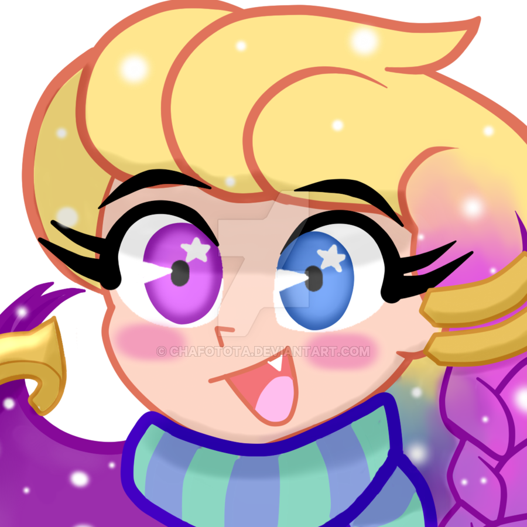Zoe se abstrajo mirando el precioso vestido rojo de la chica y preguntándose si el color representaba algo. Aunque no formase parte del juego, a Zoe le gustó. La chica parecía más alta que las demás, y Zoe pensó que quizás sabría cosas que ella necesitaba aprender.
El chico también era interesante, pero en un sentido completamente distinto. Ella sabía que su encarnación actual no viviría mucho tiempo, pero Zoe presentía que sería muy divertido que él la persiguiese. Había algo en su barbilla y en la forma de sus labios que la maravillaban.
Zoe tragó saliva, nerviosa. Al fin y al cabo, había pasado mucho tiempo desde que Zoe había sido mortal y había visitado este reino. Estaba extrañamente preocupada por que el grupo no la aceptase y la excluyesen de aquello a lo que estaban jugando.
Dos de los otros chicos, sin duda menos interesantes, empezaron a pasarse un balón entre ellos. Zoe se acordaba de este juego.
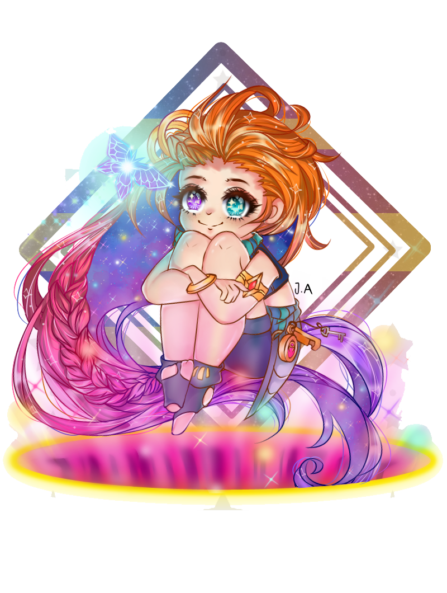Envalentonada por esta conexión, Zoe descendió en picado desde la azotea hasta el centro del grupo.
—¡Hola! —dijo mientras cambiaba el color de su pelo a uno similar al del vestido de la chica alta.
—Un espíritu —dijo el chico interesante con los ojos bien abiertos—. ¡Corred! —gritó después.
Zoe pensó que debería señalar que, más que un espíritu, era un Aspecto, pero no estaba segura de si el grito del chico formaba parte de las reglas del otro juego.
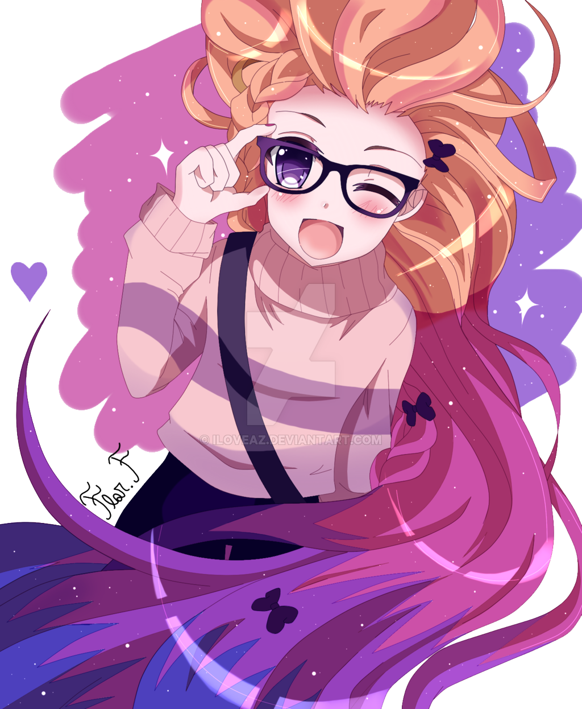—En realidad os traigo un mensaje, pero, si preferís jugar, tengo tiempo de sobra —dijo mientras se lanzó tras ellos.
A continuación, se puso a volar junto a la chica alta tan despreocupadamente como podía.
—¡Tu vestido rojo es superguay! ¿El color significa algo? —preguntó Zoe. Sin embargo, su intento por entablar conversación no sirvió de nada. Nada más hablar, el chico interesante metió a la chica alta en una casa. Luego cerró la pesada puerta de madera y dejó a Zoe sin forma de avanzar.
Zoe miró a su alrededor y descubrió que el resto de mortales también habían desaparecido, pero escuchó un tumulto procedente de un fuerte cercano al centro del pueblo.
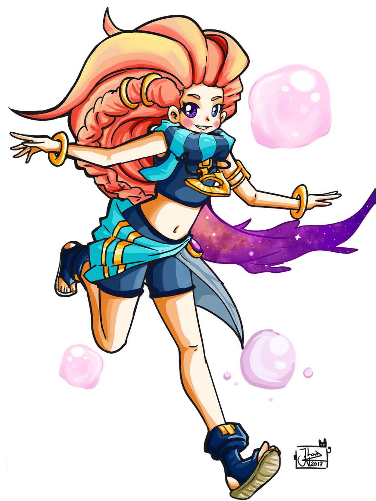Al momento, apareció una docena de hombres con armaduras corriendo con lanzas hacia Zoe. Sus armas le recordaron a la de Pantheon.
—Guardianes locales —supuso ella.
Asumiendo que se trataba de un espíritu, los hombres gritaron para alertar al pueblo mientras el líder intentaba conjurar un hechizo de destierro. A Zoe le pareció un hechizo muy bueno, pero no uno que quisiera. Se preguntó si quizá los espíritus frecuentaban el pueblo.
Cuando los hombres empezaron a lanzarle sus armas, Zoe manifestó un meteoro arcano y lo puso en órbita alrededor del fuerte. Después, la chica del crepúsculo creó un par de portales para esquivar las lanzas de los guardianes antes de redirigir por fin la estrella fugaz hacia sus agresores.
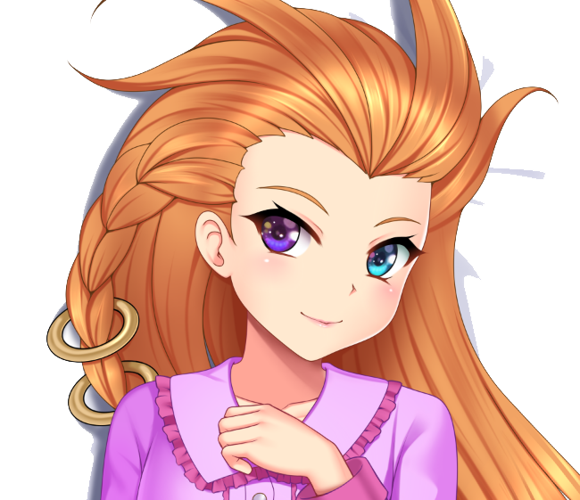El impacto del meteoro creó una implosión que provocó una reacción en cadena con las partículas pequeñas que había absorbido mientras volaba, lo que se tradujo en una segunda explosión que detonó entre los guardianes y su torre y dejó la zona hecha cenizas.
—¿Hola? —preguntó Zoe mientras las nubes de la destrucción remolineaban a su alrededor. Se preguntó si la chica alta o el chico interesante habrían escapado. Era lo más probable.
Desanimada por un instante, Zoe decidió visitar un asentamiento mortal más grande a continuación. Le pareció que alguien podría estar dispuesto a jugar con ella en un sitio así.
Zoe recordó el lugar en el que había una... ciudad hace unos cuantos miles de años. Por instinto y a pesar de sus fracasos previos, abrió un portal hacia el lugar. Se sorprendió gratamente cuando vio que el portal llevaba al destino que ella quería.
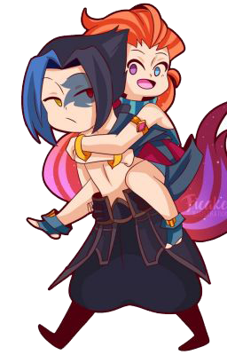—¡Qué bien! —dijo ella, contenta por poder viajar de nuevo y con ganas de entregar su próximo mensaje.
Al salir de la realidad, se preguntó si el nuevo cráter haría que unos mortales encontrasen la Runa Geogénica cercana. Puede que hasta la chica alta o el chico interesante la descubriesen.
Seguramente sería gracioso que fuese así, determinó ella.